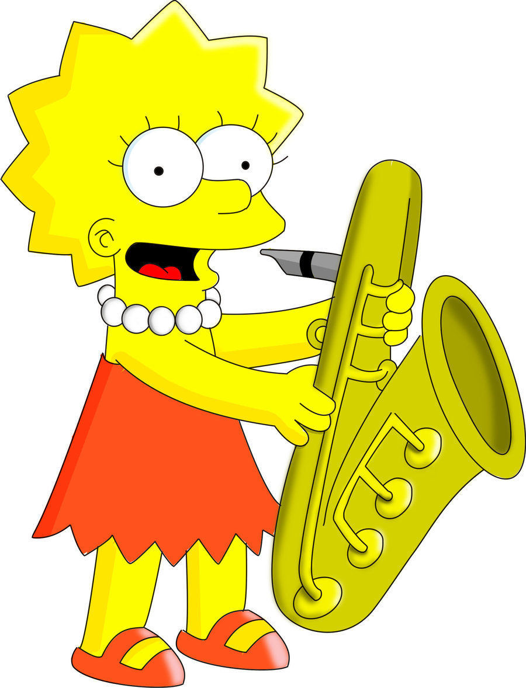

Existen muchas divisiones alternativas y subdivisiones de instrumentos. Generalmente, al estudiar los instrumentos musicales es frecuente encontrarse
con la clásica división de los instrumentos en cuatro familias: viento, cuerda, percusión y
los instrumentos eléctricos (creados por el ser humano hace aproximadamente 50 años).
Sin embargo, debido a que esta clasificación está orientada a los instrumentos de la orquesta
sinfónica, adolece de ciertas restricciones y defectos. Debido a ello, algunos musicólogos
sencillamente amplían esta clasificación añadiendo hasta tres categorías adicionales: voz, teclados y electrónicos.
Sin embargo, en 1914 los músicos Curt Sachs y Erich Hornbostel idearon un nuevo método de clasificación que, atendiendo
a las propiedades físicas de cada instrumento, pretendía ser capaz de englobar a todos los existentes. Una tercera clasificación, muy seguida en el este de Asia,
clasifica los instrumentos atendiendo a sus materiales de construcción: metal, madera, barro, cuero, entre otros.
La clasificación más usada de manera convencional es la de viento, cuerda y percusión.
Instrumentos de cuerda

Instrumentos de viento

Instrumentos de percusion

Clasificación de Sachs y Hornbostel
Erich von Hornbostel y Curt Sachs publicaron en 1914 una clasificación de los instrumentos musicales en su trabajo
Zeitschrift für Ethnologie que es ampliamente seguida en la actualidad.
Establecieron cuatro clases o categorías principales de instrumentos musicales (a la que añadieron una quinta posteriormente),
que a su vez se dividen en grupos y subgrupos, según el modo de generación del sonido:
• Idiófonos
Son aquellos instrumentos en los que el sonido procede de un cuerpo sólido y es generado por vibración del instrumento mismo
mediante percusión, frotación o pulsación, como en el caso de las claves, xilófono, campana.
• Membranófonos
Los membranófonos son aquellos en los cuales el sonido es generado por la vibración de una membrana por percusión o frotación,
como es el caso del timbal, tambor, conga.
• Aerófonos
Son los llamados instrumentos de viento, donde el sonido es generado por la vibración del aire, a causa del roce con una lengüeta,
labios o cuerdas vocales, como es en el caso de la flauta, trompeta, saxofón.
• Cordófonos
Son los llamados instrumentos de cuerda, donde el sonido es generado por la vibración de una cuerda mediante percusión, frotación o pinzamiento,
como en el caso del arpa, guitarra, violín, piano.